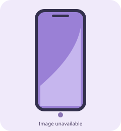

realme GT8 Pro
المواصفات المتاحة في قاعدة بيانات اختَر صح. بعض التفاصيل تختلف حسب السوق.
قارن هذا الهاتف
المواصفات
المعالجSnapdragon 8 Elite Gen 5
الشاشةAMOLED — 6.79 بوصة، حتى 144Hz
الدقة3136 × 1440
الذاكرةحتى 16GB RAM
التخزينحتى 512GB (تختلف النسخ حسب السوق)
الكاميرا الرئيسية50MP — نظام تصوير RICOH GR
التقريب200MP بيريسكوب — 65mm، OIS
الواسعة جداً50MP
السيلفيراجع مواصفات النسخة الإقليمية
البطارية7000mAh — 120W سلكي و50W لاسلكي
الحمايةراجع شهادة الحماية للنسخة المحلية
نقاط القوة
- معالج رائد قوي
- شاشة QHD+ بتردد 144Hz
- بطارية 7000mAh وشحن 120W
- كاميرا تقريب 200MP مع OIS
نقاط الضعف
- قد يكون كبير الحجم للاستخدام بيد واحدة
- سرعة الشحن الفعلية تختلف حسب الظروف
- التوفر والذاكرة يختلفان بين الأسواق
الصورة توضيحية وليست صورة فعلية للجهاز. يُفضّل التحقق من المواصفات المحلية قبل الشراء.